2006.05.21., vasárnap
tomcat
blog
droidzóna
levrov
Néhány héttel ezelõtt egy levél érkezett a dobozomba, amelyben egy úriember tisztelettel meginvitált engem egy bizonyos Turul Napra, melyre májusban kerül majd sor az agostyáni arborétumban. Ez egy afféle ellenzéki értelmiségiek teadélutánja, sok érdekes elõadással, beszélgetéssel, bográcsolással és minden egyéb jósággal, amit az ember a szabad ég alatt, a természet gyönyörû zöldjében csoportosan elkövethet. Természetesen köszönettel elfogadtam a meghívást, és tegnap, május 20-án fel is ültem a reggel nyolc órai vonatra, hogy aztán egy óra szundítás után Tata vasútállomásán találjam magam. Meghívóm, Jenõ itt telefonált rám, hogy egy kicsit késik, de addig is keressem meg dr. Kiszely István professzort, a neves antropológust és genetikust, aki ugyanezzel a vonattal érkezett. A feladat meglehetõsen könnyûnek bizonyult, Kiszely professzor ugyanis épp mellettem sétált, szintén telefonálva, így pár perc múlva együtt szálltunk be vendéglátónk fehér Suzukijába, ami aztán a mintegy tíz-tizenkét kilométerre fekvõ arborétumhoz röpített.
A Turul Nap afféle magánkezdeményezés, melyre évrõl évre sor kerül, és rendszeresen meghívják azokat, akik a magyar nemzet oldalán valamiféle tevékenységbe fognak, legyen az tudományos kutatás, hagyományõrzés, regényírás vagy éppen tüntetés. Engem épp ez utóbbi nyomán "fedeztek fel", mégpedig a tavaly májusi, Moszkva téri tüntetésen mondott beszédem nyomán; azt már kevesebben tudták, hogy blogom is van meg polóboltom, de most megtudták. Úgy ötven-hatvanan jöttünk össze a csodaszép botanikuskert mesterséges tavának partján. Velem tartott egy Canon 350D, így ti is megnézhetitek, kik voltunk és mit csináltunk.
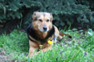
Berta kutya kicsit zabos volt, hogy nem vittem magammal, pedig megígértem. Feküdt a kedvenc fenyõje alatt, és õrizte a pitypangokat.
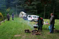
Így nézett ki a terep, amikor megérkeztünk. Még kevesen voltunk, de már állt az íjászok sátra, és fõtt a pörkölt.
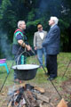
Aki fõz: Ablonczy Dániel, volt súlyemelõ bajnok. Aki valami érdekeset magyaráz: dr. Kiszely István antropológus professzor, aki mellesleg genetikát és gasztronómiát is tanít a Szent István Egyetemen. A háttérben vitéz Barsi Miklós, aki mangalicasertéseket tenyészt.

Vitéz dr. Galgóczy Sándor, állatorvos és amatõr történész, aki rengeteg érdekes történelmi dokumentumot hozott, csak úgy, nézegetni. Édesapja annak idején a K.u.K. Kriegsmarine polai haditengerészeti repülõbázisának egyik parancsnoka volt.
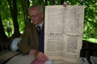

Íme az egyik érdekesség: egy 1849-es pesti újság, mely Budavár elfoglaltát adja hírül
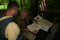
Ez pedig egy meghívó a pozsonyi országgyûlésre
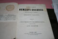
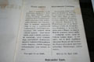
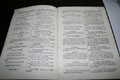
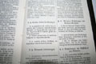
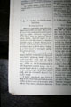
Az 1848-as honvédhadsereg eredeti szolgálati szabályzata
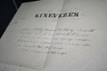
Egy százados kinevezési oklevele, Mészáros Lázár honvédelmi miniszter aláírásával
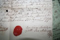
Egy magyar nemes levele a XVIII. század végérõl
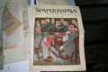
Egy német szatirikus magazin 1923-as száma, borítóján kifigurázva egy Hitler nevû bolondos figurát, aki a börtönben írt könyvét kínálgatja a berlini kávéházakban és sörözõkben
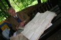
Egy magyar nemesi család családfája
Sanyi bácsi azt is említette, hogy édesapja hagyatékában rengeteg, eddig sehol nem publikált fénykép maradt fenn a K.u.K. Kriegsmarine életérõl, a hajókról, repülõgépeikrõl. Akadnak a gyûjteményben légifelvételek, hadgyakorlatok képei, felderítési felvételek olasz kikötõkrõl, és még egy halom más. Azon tanakodtunk, ezt ki kellene adni könyvben. A képeket meg is kaptam CD-n, egyelõre félre vannak téve, ha lesz idõm, majd betördelem és keresek rá kiadót. De számtalan egyéb érdekesség is hever Sanyi bácsi padlásán, kész múzeum lehet az otthona.
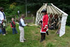
A Csallóközbõl érkezett lovasíjász hagyományõrzõk ló nélkül bár, de bemutatták tudományukat. Mindenki lövöldözhetett kedvére.
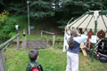
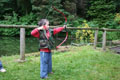
A legkisebbek is
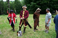
Íjászok
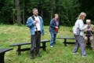
A találkozó szervezõje, Jenõ köszönti az egybegyûlteket
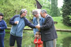
Arlet Tamás megkínálja valamivel vitéz Fehér Imrét, Gyõr-Moson megye vitézi rendi székkapitányát. A háttérben Varga Domokos György újságíró.
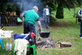
Közben fõtt a vörösboros marhapörkölt
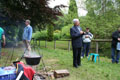
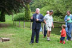
Kiszely professzor rögtönzött kiselõadást tart
Mirõl beszélt nekünk a világhírû tudós? Egy-két olyan dologról, amit nem igazán szabad tudni a magyarnak. Például hogy minden nemzetnek azonosítható génállománya van, és nemrég fejezték be a magyarok géntérképének leírását. Kiderült, hogy a magyar gének, s ezáltal az öröklõdõ tulajdonságok a legdominánsabbak az egész emberi fajon belül. Az amerikai Rockefeller Intézet kevéssel korábban azt publikálta, hogy a zsidók génjei a legerõsebbek, de miután Kiszely professzor közzétette saját eredményeit, ezt a publikációt visszavonták. Ennek köszönhetõ, hogy minket, magyarokat soha nem tudtak innen kiirtani; jöhetett ide tatár, török, kun, sváb vagy orosz, mind elõbb-utóbb magyarrá váltak. Kiszely úr nyilván tudja, mit beszél, hiszen nemzetközileg elismert szaktekintély, számos világhírû kutatásban vett részt. Persze az ilyen Index-kaliberû újságírók ki szokták röhögni az ilyet, mert hát õk biztos jobban tudják egy darab érettségivel.
S micsoda szapora nemzet vagyunk mi! A honfoglalás ideje óta harmincszorosára nõtt nemzetünk. Akkor mintegy félmillióan voltunk, ma, minden tatár-, török- és oroszdúlás, milliós kivándorlás ellenére 15 millióan.
A magyarok úgy érkeztek ide, az írástudatlan, kultúrájukat épp csak építgetni kezdõ Európába, hogy saját írásbeliséget, verseket, konyhamûvészetet, földmûvelési kultúrát, hadtudományt, építészetet hoztak magukkal. Azt is megtudtuk, hogy a paprika és a paradicsom nem Amerikából érkezett, mint állítják. X. századi magyar sírokban találtak paprikamaradványokat, kiszáradt magvakat. Ismertük a burgonyát is, csak nem az amerikai fajtát, hanem a ma ritkábban használt édesburgonyát. Egyedül a kukoricát nem ismertük. Miközben nálunk nemrég ünnepelték a kétszázezredik népdal lejegyzését, a bennünket lenézõ Németországban eleddig csak hatezernél tartanak. Még ma is csaknem gond nélkül el tudjuk olvasni olyan ezeréves szövegeinket, mint a Halotti Beszéd vagy az Ómagyar Mária-siralom, míg a nyugati nyelvek beszélõi már csak szótárral értik meg a középkori írásaikat. De ha már a németeknél tartunk, a magyarok már a honfoglalás elõtt is fõztek sört, amikor a németek még azon tanakodtak, nem túl hülye név-e egy falunak az, hogy München. Valaki hozott is pár palackkal egy különleges méz-gyömbérsörbõl, ami õsi hun recept alapján, vadmézbõl készül, és nemrég elnyerte a világ legjobb söre díját egy nemzetközi fesztiválon.
S hogy elfogyunk-e innen valaha, mi lesz velünk most, hogy úgymond, megint elfoglaltak bennünket, Kiszely professzor csak annyit mondott: ugyan, mi egy ezeréves nemzet életében négy vagy akár nyolc esztendõ? 1805-ben például az egész országból mindössze hatan mertek beiratkozni az ország egyetlen magyar nyelvû egyetemére. Mégis itt vagyunk.
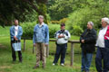
Aztán Varga Domokos György következett egy kis politikai elmélkedéssel
Dr. Révész István hozzászól
Itt egy kis polemizálás következett arról, miért is volt hülye a Fidesz a választásokon.
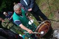
A szakács nem szólt hozzá, csak fõzött rendületlenül
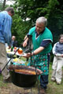
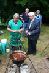
Kész! Az elsõ kóstolás a gasztronómia neves mûvelõjének jutott
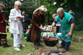
Az íjászok is éhesek
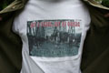
Pólójavaslat
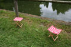
Árpád-sávos székek. Lehetne még egy, akkor ez lenne a Háromszék.
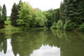
A tavacska
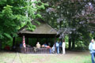
Ebben a szanetliben lehetett üldögélni
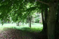
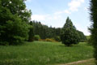
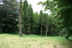
Pár kép az arborétumról
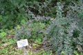
Ez itt a Thunberg-féle borbolya
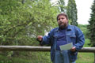
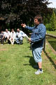
Dr. Révész István elõadása közben kisütött a nap
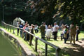
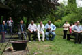
A közönség figyel
István barátunk érdekes összefoglalást adott a nemzeti oldal pillanatnyi lelkiállapotáról. "Kijelenthetjük, hogy 2006-ban a magyar rendszerváltási kísérlet véget ért, kudarcot vallott" - mondta még az elején, s valóban, ebben igaza volt. Azt a véleményét is osztottuk valamennyien, hogy ez a rendszer, a globális liberalizmus nem maradhat fenn sokáig, természetébõl fakadóan össze fog omlani, és minél mélyebbre halad a válságban, annál erõsebb terrorral próbálja majd fenntartani saját belsõ rendjét. "Nincs jobb- és baloldal: nemzeti és nemzetellenes oldal van" - hangzott el a másik kulcsmondat, amit érdemes megjegyezni. István ezután valamiféle összefogási mozgalom szükségességét próbálta fejtegetni, a szabadkõmûvesek módszereihez hasonlóan szervezve, de nagyon elkeserítettük, amikor szembesítettük a média megkerülhetetlenségével és azzal, hogy a szabadkõmûvesek már évszázadokkal ezelõtt kidolgozták az ellenkonspirációk kivédésének módját. Nincs más megoldás, várni kell az összeomlásra, és majd a romokon lehet építkezni, mint számtalan alkalommal történelmünk során.
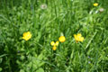
Gólyahír. Legalábbis azt hiszem.
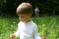
Legfiatalabb vendégünk szerint nem gólyahír
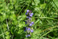
Virág
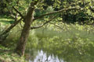
A tavacska partja

Rövidesen jött Császár Károly erdész, és körbekalauzolt bennünket az arborétum területén, bemutatva a különféle fákat és bokrokat
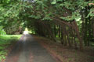
Ezek itt tiszafák
További virágok
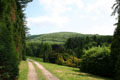
Pillantás a Gerecsére
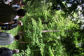
Ezek itt törökmogyorófák. A csokoládéipar elõszeretettel használja a termésüket, így például a piros mogyorós csokiban is ez van.
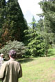
Egy himalájai törpefenyõ - ami egyébként nem is törpe, eredeti élõhelyén 15-20 méteresre is megnõ - és egy rakétafenyõ
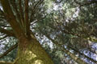
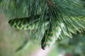
Balkáni selyemfenyõk
Megint pár virág
Fagyûjtemény

Minden fa mellett ilyen kis táblák hirdetik, mit is láthatunk. Az egyiken jó nagyot zakóztam.
Vörösfenyõ
Az õ nevüket elfelejtettem
Ezen az úton tölgyfélék nõnek
Mohos tuskó
Aljnövényzet

A hatodikos biológia-tankönyv egyik fõszereplõje
Ennek is elfelejtettem a nevét
Boróka
A fák megtekintése
Újabb virág
Gólyahírbõl sosem elég
Ezt se tudom, hogy hívják, de nagyon szép

Éhes hangyák
Ez egy amerikai mammutfenyõ. Az a fajta, amelyik kétszáz méteresre is megnõ. Ez még nem akkora, de hat-hétezer év, és akár nagyobb is lehet.
A mammutfenyõ a tavacska felé nézeget
Ez pedig egy Douglas-fenyõ, amibõl egy fél hektárnyit beültettek. A Twin Peaks-bõl ismerõs lehet.
Virágzó rododendron
Egy másik rododendron-virág, egyelõre zárva

Ez pedig egy óriási vöröshangya-boly
Végezetül Sanyi bácsi tartott rövid elõadást az 1945-46-os felvidéki kitelepítésekrõl és az 1919-es komáromi csatáról, amelyben keresztapja is részt vett
Az elõadások után vitéz Várhelyi András két könyvével ajándékozott meg minden résztvevõt: Bocsánat! címû könyve 1956-ról szól, arról, hogy a megtorlás voltaképpen a magyar holocaust volt, az Elmondó címû kötet pedig novellákat tartalmazott. Köszönjük.
Egészen estig beszélgettünk, filozofáltunk, ötleteltünk és tervezgettünk a zöld fák tövében, mi is van a világgal, és hogyan lehetne egyenesbe igazítani, amit lehet. Végül elbúcsúztunk, hazaszállingóztunk, és reméljük, jövõre is lesz Turul Nap.